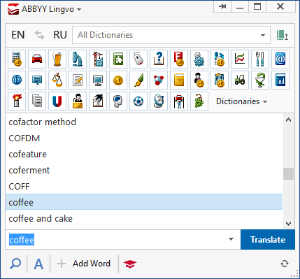
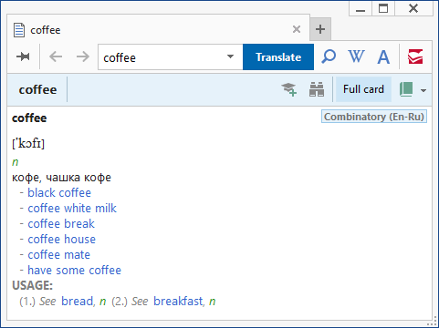
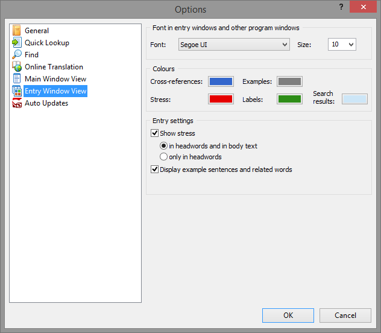
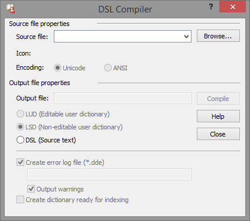

Lingvo x6 (16.0)
Замечания
Версия программы выпущена в 2014 году.
Прекращена неофициальная поддержка языков: азербайджанский, киргизский, таджикский, туркменский, узбекский.
Внешний вид
Вид основного окна программы.

Вид словарной карточки.

Вкладка «Вид словарной карточки» в диалоге настроек программы.

Вид окна компилятора пользовательских словарей.

Состав словарей
| Наименование | Автор, издание | Объём |
|---|---|---|
| ... в разработке ... | ... в разработке ... | ... в разработке ... |